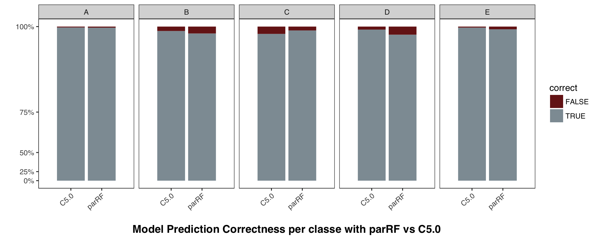

Use of Practical Machine Learning to Classify Ways of Doing Unilateral Dumbbell Biceps Curl
Aldrin R. Desoloc
Apr. 9, 2017
Overview
By using fitness trackers, it is now possible to collect a large amount of data about personal activity relatively inexpensively. One thing that people regularly do is quantify how much of a particular activity they do using these wearable devices, but they rarely quantify how well they do it. Due to this, a human activity recognition research was conducted to create the Weight Lifting Exercises dataset from accelerometers on the belt, forearm, arm, and dumbell of 6 young male participants with little weight lifting experience (see the paper by Velloso et al in the references below). They were asked to perform one set of 10 repetitions of the unilateral dumbbell biceps curl in 5 different ways:
- Class A: Exactly according to the specification
- Class B: Throwing the elbows to the front
- Class C: Lifting the dumbbell only halfway
- Class D: Lowering the dumbbell only halfway; and
- Class E: Throwing the hips to the front.
Class A corresponds to the specified execution of the exercise, while the other 4 classes correspond to common mistakes.
In this report, the Weight Lifting Exercise dataset will be used to model a classifier to predict how the dumbbell lifts was done based on the classes specfied above. The approach is to train different models using some of the best performing machine learning algorithms using R’s caret package with 10-fold cross-validation using the training dataset, and then compare them with predication accuracy over the validation dataset. Training time is enhanced with using data table instead of data frame when cleaning and processing the data, also with compiled functions so that they can be interpreted by a very fast byte code interpreter, and with parallel processing through caret. In the end, the chosen model is applied to predict the 20 test cases available in the test data (target classes are unknown) from the final project of Coursera Practical Machine Learning course.
Data Cleaning and Preprocessing
The original training dataset (loaded from file pml-training.csv) has 19,622 observations and 160 variables, while the original testing dataset (loaded from file pml-testing.csv) contains 20 observations and 160 variables but has difference of one variable/feature. The testing dataset has no classe variable as this dataset will be used to predict its classe variable based on the model built by a trained classifier. (Refer to Appendix 1 to see the summary of the loaded training dataset.)
For tidying the datasets, we first remove the columns or variables of the training dataset that are near-zero variance predictors and if all of their values is NA.
# Remove columns that all values are NA's
rawTraining <- rawTraining[, .SD,
.SDcols = (colSums(is.na(rawTraining)) < nrow(rawTraining))]
# Remove zero covariates
rawTraining <- rawTraining[, .SD, .SDcols = -(nearZeroVar(rawTraining,
allowParallel = TRUE))]The predictor variables‘and target variables’ class types are then changed to numeric and factor respectively.
# Change other variable's class as numeric
rawTraining <- rawTraining[ , c(8:ncol(rawTraining) - 1) := lapply(.SD, as.numeric)
, .SDcols = c(8:ncol(rawTraining) - 1)]
rawTesting <- rawTesting[ , c(8:ncol(rawTesting) - 1) := lapply(.SD, as.numeric)
, .SDcols = c(8:ncol(rawTesting) - 1)]
# Set variable classe as factor
rawTraining <- rawTraining[, 'classe' := lapply(.SD, as.factor), .SDcols = 'classe']Instead of using caret’s preProcess function for imputation, the predictor variables with missing values are imputed with mean per user_name. Below is the cross tabulation of number of observations by the variable classe and variable user_name:
# A compiled function to impute mean by user_name variable
f_imb <- function (dat, by) {
cols <- colnames(dat)[colSums(is.na(dat)) > 0]
return (dat[, (cols) := lapply(.SD, function(x) replace(x,
which(is.na(x)),
ifelse(is.na(mean(x, na.rm = TRUE)), 0,
mean(x, na.rm = TRUE)))),
by = c(by),
.SDcols = cols])
}
imputeMeanBy <- cmpfun(f_imb)
rawTraining <- imputeMeanBy(rawTraining, "user_name")
rawTesting <- imputeMeanBy(rawTesting, "user_name")
# Check how many instances of classe's among users
table(rawTraining$user_name, rawTraining$classe)##
## A B C D E
## adelmo 1165 776 750 515 686
## carlitos 834 690 493 486 609
## charles 899 745 539 642 711
## eurico 865 592 489 582 542
## jeremy 1177 489 652 522 562
## pedro 640 505 499 469 497We can verify below that we have removed the NA’s from the training dataset, i.e. the total number of non-NA values should be the same as the training dataset’s number of columns \(\times\) number of rows, i.e. 2,433,128.
# Check if there's no NA's anymore; total counts should be equal to nrow x ncol
table(is.na(rawTraining)) ##
## FALSE
## 2433128Below is the marginal table of observations among the target variable classe within the training dataset. As we can see, class A has the highest number of cases from the training dataset.
# Distribution of classe among the training dataset
prop.table(table(rawTraining$classe))##
## A B C D E
## 0.2843747 0.1935073 0.1743961 0.1638977 0.1838243Furthermore, highly correlated attributes will be removed so that training a model would perform better. We’ll use caret’s findCorrelation function to find the attributes that are highly correlated features. In practice, the attributes with an absolute correlation of 0.75 or higher can be removed but we’ll retain more as they could be important in our model, hence we’ll set the cutoff at 95% (refer to Appendix 5 for the features retained).
# Predictors to remove
#names(rawTraining[, c(1:6)])
rawTraining <- rawTraining[, -c(1:6)]
# Remove further using feature selection
correlationMatrix <- cor(subset(rawTraining, select = (names(rawTraining) != 'classe')))
highlyCorrelated <- findCorrelation(correlationMatrix, cutoff = 0.95)
# Columns to remove further
#names(rawTraining[, .SD, .SDcols = (highlyCorrelated)])
# Training data with deleted highly correlated features
rawTraining <- rawTraining[, .SD, .SDcols = -(highlyCorrelated)]
# Choose only the columns in testing set that exist in the train data
testing <- subset(rawTesting, select = (names(rawTesting) %in% names(rawTraining)))
#names(rawTraining)
#names(testing)The cleaned training set is split with typical 60% / 40% into a new training set for prediction and a validation set respectively to compute the out-of-sample errors through cross-validation. The expected value of the out-of-sample error will correspond to the expected number of missclassified observations over total number of observations in the “test” (here, it’s the validation) dataset, which is the computed (1 - accuracy) found from cross-validation.
# Split data with randoom rows and preserved the overall class distribution of the data.
seed <- 39703
set.seed(seed) # For reproducibility
idx <- createDataPartition(rawTraining$classe, p = 0.6, list = FALSE )
training <- rawTraining[idx, ]
validation <- rawTraining[-idx, ]The new training dataset has 11,776 observations and the validation dataset has 7,846 observations, and both has 91 variables, while the cleaned testing dataset contains 20 observations and 90 variables.
Training Different Models
Various classication algorithms will be used to train different models on the training data with 10-fold cross-validation and without explicitly specifying the tuning parameters, i.e. we let the learner automatically search for the best parameters. The classification algorithms are some of available learning methods from caret such as Stochastic Gradient Boosting (gbm), Parallel Random Forest (parRF), Support Vector Machines with Polynomial Kernel (svmPoly), and the C5.0. These samples of machine learning algorithms are based on comparison papers by Delgado et al and by Wainer (see the references at the bottom of this page).
Training different models through caret has proven to be more convenient because it provides a simple, common interface to almost every machine learning algorithm in R. However, it’s a bit slower than the counterpart non-caret packages, hence parallel processing is utilized to speed up the training time.
## --------------------------------------------------------------------------------
## Stochastic Gradient Boosting
##
## 11776 samples
## 90 predictor
## 5 classes: 'A', 'B', 'C', 'D', 'E'
##
## Pre-processing: centered (90), scaled (90)
## Resampling: Cross-Validated (10 fold)
## Summary of sample sizes: 10598, 10599, 10598, 10599, 10598, 10600, ...
## Resampling results across tuning parameters:
##
## interaction.depth n.trees Accuracy Kappa
## 1 50 0.7409 0.6715
## 1 100 0.8103 0.7599
## 1 150 0.8433 0.8017
## 2 50 0.8511 0.8114
## 2 100 0.9041 0.8787
## 2 150 0.9294 0.9107
## 3 50 0.8920 0.8633
## 3 100 0.9397 0.9237
## 3 150 0.9575 0.9462
##
## Tuning parameter 'shrinkage' was held constant at a value of 0.1
##
## Tuning parameter 'n.minobsinnode' was held constant at a value of 10
## Accuracy was used to select the optimal model using the largest value.
## The final values used for the model were n.trees = 150,
## interaction.depth = 3, shrinkage = 0.1 and n.minobsinnode = 10.
## Confusion Matrix and Statistics
##
## Reference
## Prediction A B C D E
## A 2187 31 10 4 0
## B 41 1428 37 5 7
## C 0 49 1297 20 2
## D 2 7 42 1223 12
## E 4 14 15 22 1387
##
## Overall Statistics
##
## Accuracy : 0.9587
## 95% CI : (0.9541, 0.963)
## No Information Rate : 0.2847
## P-Value [Acc > NIR] : < 2.2e-16
##
## Kappa : 0.9478
## Mcnemar's Test P-Value : 1.09e-05
##
## Statistics by Class:
##
## Class: A Class: B Class: C Class: D Class: E
## Sensitivity 0.9790 0.9339 0.9258 0.9600 0.9851
## Specificity 0.9920 0.9858 0.9890 0.9904 0.9915
## Pos Pred Value 0.9798 0.9407 0.9481 0.9510 0.9619
## Neg Pred Value 0.9916 0.9840 0.9839 0.9922 0.9967
## Prevalence 0.2847 0.1949 0.1786 0.1624 0.1795
## Detection Rate 0.2787 0.1820 0.1653 0.1559 0.1768
## Detection Prevalence 0.2845 0.1935 0.1744 0.1639 0.1838
## Balanced Accuracy 0.9855 0.9598 0.9574 0.9752 0.9883
## --------------------------------------------------------------------------------
## Parallel Random Forest
##
## 11776 samples
## 90 predictor
## 5 classes: 'A', 'B', 'C', 'D', 'E'
##
## Pre-processing: centered (90), scaled (90)
## Resampling: Cross-Validated (10 fold)
## Summary of sample sizes: 10598, 10599, 10598, 10599, 10598, 10600, ...
## Resampling results across tuning parameters:
##
## mtry Accuracy Kappa
## 2 0.9604 0.9499
## 46 0.9899 0.9872
## 90 0.9790 0.9735
##
## Accuracy was used to select the optimal model using the largest value.
## The final value used for the model was mtry = 46.
## Confusion Matrix and Statistics
##
## Reference
## Prediction A B C D E
## A 2227 4 0 0 1
## B 14 1496 7 0 1
## C 0 4 1357 7 0
## D 0 0 22 1264 0
## E 0 2 1 5 1434
##
## Overall Statistics
##
## Accuracy : 0.9913
## 95% CI : (0.989, 0.9933)
## No Information Rate : 0.2856
## P-Value [Acc > NIR] : < 2.2e-16
##
## Kappa : 0.989
## Mcnemar's Test P-Value : NA
##
## Statistics by Class:
##
## Class: A Class: B Class: C Class: D Class: E
## Sensitivity 0.9938 0.9934 0.9784 0.9906 0.9986
## Specificity 0.9991 0.9965 0.9983 0.9967 0.9988
## Pos Pred Value 0.9978 0.9855 0.9920 0.9829 0.9945
## Neg Pred Value 0.9975 0.9984 0.9954 0.9982 0.9997
## Prevalence 0.2856 0.1919 0.1768 0.1626 0.1830
## Detection Rate 0.2838 0.1907 0.1730 0.1611 0.1828
## Detection Prevalence 0.2845 0.1935 0.1744 0.1639 0.1838
## Balanced Accuracy 0.9964 0.9949 0.9883 0.9936 0.9987
## --------------------------------------------------------------------------------
## Support Vector Machines with Polynomial Kernel
##
## 11776 samples
## 90 predictor
## 5 classes: 'A', 'B', 'C', 'D', 'E'
##
## Pre-processing: centered (90), scaled (90)
## Resampling: Cross-Validated (10 fold)
## Summary of sample sizes: 10598, 10599, 10598, 10599, 10598, 10600, ...
## Resampling results across tuning parameters:
##
## degree scale C Accuracy Kappa
## 1 0.001 0.25 0.4686 0.2988
## 1 0.001 0.50 0.5681 0.4440
## 1 0.001 1.00 0.6005 0.4893
## 1 0.010 0.25 0.6361 0.5366
## 1 0.010 0.50 0.6688 0.5785
## 1 0.010 1.00 0.7000 0.6179
## 1 0.100 0.25 0.7325 0.6593
## 1 0.100 0.50 0.7473 0.6784
## 1 0.100 1.00 0.7607 0.6956
## 2 0.001 0.25 0.5792 0.4588
## 2 0.001 0.50 0.6129 0.5052
## 2 0.001 1.00 0.6465 0.5498
## 2 0.010 0.25 0.8419 0.7994
## 2 0.010 0.50 0.8730 0.8389
## 2 0.010 1.00 0.8977 0.8703
## 2 0.100 0.25 0.9676 0.9589
## 2 0.100 0.50 0.9725 0.9652
## 2 0.100 1.00 0.9766 0.9703
## 3 0.001 0.25 0.6118 0.5031
## 3 0.001 0.50 0.6508 0.5550
## 3 0.001 1.00 0.7072 0.6276
## 3 0.010 0.25 0.8989 0.8719
## 3 0.010 0.50 0.9238 0.9035
## 3 0.010 1.00 0.9456 0.9310
## 3 0.100 0.25 0.9861 0.9824
## 3 0.100 0.50 0.9854 0.9815
## 3 0.100 1.00 0.9849 0.9809
##
## Accuracy was used to select the optimal model using the largest value.
## The final values used for the model were degree = 3, scale = 0.1 and C
## = 0.25.
## Confusion Matrix and Statistics
##
## Reference
## Prediction A B C D E
## A 2210 13 9 0 0
## B 22 1488 7 0 1
## C 4 9 1342 9 4
## D 4 0 19 1263 0
## E 2 11 5 2 1422
##
## Overall Statistics
##
## Accuracy : 0.9846
## 95% CI : (0.9816, 0.9872)
## No Information Rate : 0.2858
## P-Value [Acc > NIR] : < 2.2e-16
##
## Kappa : 0.9805
## Mcnemar's Test P-Value : NA
##
## Statistics by Class:
##
## Class: A Class: B Class: C Class: D Class: E
## Sensitivity 0.9857 0.9783 0.9711 0.9914 0.9965
## Specificity 0.9961 0.9953 0.9960 0.9965 0.9969
## Pos Pred Value 0.9901 0.9802 0.9810 0.9821 0.9861
## Neg Pred Value 0.9943 0.9948 0.9938 0.9983 0.9992
## Prevalence 0.2858 0.1939 0.1761 0.1624 0.1819
## Detection Rate 0.2817 0.1897 0.1710 0.1610 0.1812
## Detection Prevalence 0.2845 0.1935 0.1744 0.1639 0.1838
## Balanced Accuracy 0.9909 0.9868 0.9835 0.9939 0.9967
## --------------------------------------------------------------------------------
## C5.0
##
## 11776 samples
## 90 predictor
## 5 classes: 'A', 'B', 'C', 'D', 'E'
##
## Pre-processing: centered (90), scaled (90)
## Resampling: Cross-Validated (10 fold)
## Summary of sample sizes: 10598, 10599, 10598, 10599, 10598, 10600, ...
## Resampling results across tuning parameters:
##
## model winnow trials Accuracy Kappa
## rules FALSE 1 0.9496 0.9363
## rules FALSE 10 0.9883 0.9852
## rules FALSE 20 0.9897 0.9870
## rules TRUE 1 0.9515 0.9387
## rules TRUE 10 0.9885 0.9854
## rules TRUE 20 0.9910 0.9886
## tree FALSE 1 0.9440 0.9291
## tree FALSE 10 0.9870 0.9836
## tree FALSE 20 0.9897 0.9870
## tree TRUE 1 0.9463 0.9321
## tree TRUE 10 0.9867 0.9831
## tree TRUE 20 0.9900 0.9873
##
## Accuracy was used to select the optimal model using the largest value.
## The final values used for the model were trials = 20, model = rules
## and winnow = TRUE.
## Confusion Matrix and Statistics
##
## Reference
## Prediction A B C D E
## A 2228 4 0 0 0
## B 4 1504 6 1 3
## C 0 11 1347 10 0
## D 0 0 6 1278 2
## E 0 2 0 1 1439
##
## Overall Statistics
##
## Accuracy : 0.9936
## 95% CI : (0.9916, 0.9953)
## No Information Rate : 0.2845
## P-Value [Acc > NIR] : < 2.2e-16
##
## Kappa : 0.9919
## Mcnemar's Test P-Value : NA
##
## Statistics by Class:
##
## Class: A Class: B Class: C Class: D Class: E
## Sensitivity 0.9982 0.9888 0.9912 0.9907 0.9965
## Specificity 0.9993 0.9978 0.9968 0.9988 0.9995
## Pos Pred Value 0.9982 0.9908 0.9846 0.9938 0.9979
## Neg Pred Value 0.9993 0.9973 0.9981 0.9982 0.9992
## Prevalence 0.2845 0.1939 0.1732 0.1644 0.1840
## Detection Rate 0.2840 0.1917 0.1717 0.1629 0.1834
## Detection Prevalence 0.2845 0.1935 0.1744 0.1639 0.1838
## Balanced Accuracy 0.9987 0.9933 0.9940 0.9947 0.9980
## --------------------------------------------------------------------------------Model Comparison
Below is the model comparison table highlighting different models, with their corresponding accuracy, expected out-of-sample (OOS) errors and kappa values from prediction over the validation data, the multi-class area under the curve (AUC) computed by multiclass.roc function of pROC package, and the time to train the classifier. The table is sorted by expected out-of-sample errors from the lowest to highest.
## Method Accuracy OOS Error Kappa Multi-class AUC Time Elapsed
## 1 C5.0 0.993627 0.006373 0.991939 0.997534 00:08:38.418598
## 2 parRF 0.991333 0.008667 0.989036 0.997020 00:10:52.290795
## 3 svmPoly 0.984578 0.015422 0.980490 0.991981 01:25:57.926228
## 4 gbm 0.958705 0.041295 0.947765 0.982376 00:07:55.686496Based on the table above, the model by C5.0 gets the least expected out-of-sample errors, yet has the highest accuracy, kappa and the average AUC values from the cross-validation. The model trained by parallel Random Forest has similar outcome as C5.0’s.
Next, we’ll further explore and compare differences between models by their resampling distributions. (This technique is based on Section 5.8.2. Between-Models of the caret documentation.)
# Resampling distributions of models.
set.seed(seed)
resamps <- resamples(lModels)
# Get the model with highest accuracy from resamps
resampsAcc <- as.data.frame(resamps$values[grep("Accuracy", colnames(resamps$values))])
resampModelNameWithMaxAcc <- sub("~Accuracy", "", names(resampsAcc)
[which.max(abs(unlist(lapply(resampsAcc, mean))))])
# Get the differences of resampled models
difValues <- diff(resamps)
# Get the models with minimum mean difference in accuracy
diffAcc <- as.data.frame(difValues$difs$Accuracy[,
grep(resampModelNameWithMaxAcc, colnames(difValues$difs$Accuracy))])
modelsToCompare <- unlist(strsplit(names(diffAcc)
[which.min(abs(unlist(lapply(diffAcc, mean))))], ".diff."))As shown in Appendix 1, models are ranked from highest to lowest accuracy at the right plot. At the left, the differences in accuracy within the confidence level of 0.992 are plotted for each of model pairs. The accuracy of models based on C5.0 and parRF are pretty close and almost has no difference. In Appendix 2, we can see that the model built by C5.0 beats the parRF’s when correctly predicting most of the classe values from the validation dataset. Moreover, the ROC plots in Appendix 3, which are implemented with one-vs-all approach, show that models trained by C5.0 and parRF are both optimal.
We’ll choose the model with the highest accuracy from the comparison table, i.e. C5.0 to predict the test cases and save it as file.
# Save the model as .RDS file
trainedModelNameWithMaxAcc <- dtModels[1, 1]
mod <- eval(parse(text = paste('lModels$', trainedModelNameWithMaxAcc, sep = '')))
modelFileName <- paste('model-', trainedModelNameWithMaxAcc, '.rds', sep = '')
saveRDS(mod, modelFileName) # Save the model as file
message(paste('The trained model for ', trainedModelNameWithMaxAcc,
' has been saved as ', modelFileName, '.', sep = ''))## The trained model for C5.0 has been saved as model-C5.0.rds.Prediction on Testing Set
We now use our model built through C5.0 to predict the target variable classe for the testing dataset.
modelFileName <- paste('model-', trainedModelNameWithMaxAcc, '.rds', sep = '')
message(paste('Loading the final model from ', modelFileName
, ' and then apply it to predict the 20 test cases ...', sep = ''))## Loading the final model from model-C5.0.rds and then apply it to predict the 20 test cases ...finalModel <- readRDS(modelFileName)
print(predict(finalModel, testing))## [1] B A B A A E D B A A B C B A E E A B B B
## Levels: A B C D EReferences
- Brownlee, J. Feature Selection with the Caret R Package. (http://machinelearningmastery.com/feature-selection-with-the-caret-r-package/).
- Fernandez-Delgado, M.; Cernadas E.; Barro, S; Amorim, D. Do we Need Hundreds of Classifiers to Solve Real World Classification Problems?. Journal of Machine Learning Research 15 (2014). p.3133-3181. (http://jmlr.org/papers/volume15/delgado14a/delgado14a.pdf).
- Grigorev, A. Response to “How to plot ROC curves in multiclass classification?”. (http://stats.stackexchange.com/questions/2151/how-to-plot-roc-curves-in-multiclass-classification).
- Kuhn, M. The caret Package. (https://topepo.github.io/caret/).
- Velloso, E.; Bulling, A.; Gellersen, H.; Ugulino, W.; Fuks, H. Qualitative Activity Recognition of Weight Lifting Exercises. Proceedings of 4th International Conference in Cooperation with SIGCHI (Augmented Human ’13) . Stuttgart. Germany: ACM SIGCHI, 2013. (http://groupware.les.inf.puc-rio.br/har).
- Wainer, J. Comparison of 14 different families of classification algorithms on 115 binary datasets. (https://arxiv.org/pdf/1606.00930.pdf).
Appendix
1. Dot Plots of Model Resamples and Differences

2. Bar Chart of Prediction Correctness from Cross-Validation Between C5.0 and Parallel Random Forest

3. Multiclass ROC Plots of C5.0 and Parallel Random Forest
4. Summary of the Training Dataset pml-training.csv
## V1 user_name raw_timestamp_part_1
## Length:19622 Length:19622 Min. :1.322e+09
## Class :character Class :character 1st Qu.:1.323e+09
## Mode :character Mode :character Median :1.323e+09
## Mean :1.323e+09
## 3rd Qu.:1.323e+09
## Max. :1.323e+09
##
## raw_timestamp_part_2 cvtd_timestamp new_window
## Min. : 294 Length:19622 Length:19622
## 1st Qu.:252912 Class :character Class :character
## Median :496380 Mode :character Mode :character
## Mean :500656
## 3rd Qu.:751891
## Max. :998801
##
## num_window roll_belt pitch_belt yaw_belt
## Min. : 1.0 Min. :-28.90 Min. :-55.8000 Min. :-180.00
## 1st Qu.:222.0 1st Qu.: 1.10 1st Qu.: 1.7600 1st Qu.: -88.30
## Median :424.0 Median :113.00 Median : 5.2800 Median : -13.00
## Mean :430.6 Mean : 64.41 Mean : 0.3053 Mean : -11.21
## 3rd Qu.:644.0 3rd Qu.:123.00 3rd Qu.: 14.9000 3rd Qu.: 12.90
## Max. :864.0 Max. :162.00 Max. : 60.3000 Max. : 179.00
##
## total_accel_belt kurtosis_roll_belt kurtosis_picth_belt
## Min. : 0.00 Length:19622 Length:19622
## 1st Qu.: 3.00 Class :character Class :character
## Median :17.00 Mode :character Mode :character
## Mean :11.31
## 3rd Qu.:18.00
## Max. :29.00
##
## kurtosis_yaw_belt skewness_roll_belt skewness_roll_belt.1
## Length:19622 Length:19622 Length:19622
## Class :character Class :character Class :character
## Mode :character Mode :character Mode :character
##
##
##
##
## skewness_yaw_belt max_roll_belt max_picth_belt max_yaw_belt
## Length:19622 Min. :-94.300 Min. : 3.00 Length:19622
## Class :character 1st Qu.:-88.000 1st Qu.: 5.00 Class :character
## Mode :character Median : -5.100 Median :18.00 Mode :character
## Mean : -6.667 Mean :12.92
## 3rd Qu.: 18.500 3rd Qu.:19.00
## Max. :180.000 Max. :30.00
## NA's :19216 NA's :19216
## min_roll_belt min_pitch_belt min_yaw_belt amplitude_roll_belt
## Min. :-180.00 Min. : 0.00 Length:19622 Min. : 0.000
## 1st Qu.: -88.40 1st Qu.: 3.00 Class :character 1st Qu.: 0.300
## Median : -7.85 Median :16.00 Mode :character Median : 1.000
## Mean : -10.44 Mean :10.76 Mean : 3.769
## 3rd Qu.: 9.05 3rd Qu.:17.00 3rd Qu.: 2.083
## Max. : 173.00 Max. :23.00 Max. :360.000
## NA's :19216 NA's :19216 NA's :19216
## amplitude_pitch_belt amplitude_yaw_belt var_total_accel_belt
## Min. : 0.000 Length:19622 Min. : 0.000
## 1st Qu.: 1.000 Class :character 1st Qu.: 0.100
## Median : 1.000 Mode :character Median : 0.200
## Mean : 2.167 Mean : 0.926
## 3rd Qu.: 2.000 3rd Qu.: 0.300
## Max. :12.000 Max. :16.500
## NA's :19216 NA's :19216
## avg_roll_belt stddev_roll_belt var_roll_belt avg_pitch_belt
## Min. :-27.40 Min. : 0.000 Min. : 0.000 Min. :-51.400
## 1st Qu.: 1.10 1st Qu.: 0.200 1st Qu.: 0.000 1st Qu.: 2.025
## Median :116.35 Median : 0.400 Median : 0.100 Median : 5.200
## Mean : 68.06 Mean : 1.337 Mean : 7.699 Mean : 0.520
## 3rd Qu.:123.38 3rd Qu.: 0.700 3rd Qu.: 0.500 3rd Qu.: 15.775
## Max. :157.40 Max. :14.200 Max. :200.700 Max. : 59.700
## NA's :19216 NA's :19216 NA's :19216 NA's :19216
## stddev_pitch_belt var_pitch_belt avg_yaw_belt stddev_yaw_belt
## Min. :0.000 Min. : 0.000 Min. :-138.300 Min. : 0.000
## 1st Qu.:0.200 1st Qu.: 0.000 1st Qu.: -88.175 1st Qu.: 0.100
## Median :0.400 Median : 0.100 Median : -6.550 Median : 0.300
## Mean :0.603 Mean : 0.766 Mean : -8.831 Mean : 1.341
## 3rd Qu.:0.700 3rd Qu.: 0.500 3rd Qu.: 14.125 3rd Qu.: 0.700
## Max. :4.000 Max. :16.200 Max. : 173.500 Max. :176.600
## NA's :19216 NA's :19216 NA's :19216 NA's :19216
## var_yaw_belt gyros_belt_x gyros_belt_y
## Min. : 0.000 Min. :-1.040000 Min. :-0.64000
## 1st Qu.: 0.010 1st Qu.:-0.030000 1st Qu.: 0.00000
## Median : 0.090 Median : 0.030000 Median : 0.02000
## Mean : 107.487 Mean :-0.005592 Mean : 0.03959
## 3rd Qu.: 0.475 3rd Qu.: 0.110000 3rd Qu.: 0.11000
## Max. :31183.240 Max. : 2.220000 Max. : 0.64000
## NA's :19216
## gyros_belt_z accel_belt_x accel_belt_y accel_belt_z
## Min. :-1.4600 Min. :-120.000 Min. :-69.00 Min. :-275.00
## 1st Qu.:-0.2000 1st Qu.: -21.000 1st Qu.: 3.00 1st Qu.:-162.00
## Median :-0.1000 Median : -15.000 Median : 35.00 Median :-152.00
## Mean :-0.1305 Mean : -5.595 Mean : 30.15 Mean : -72.59
## 3rd Qu.:-0.0200 3rd Qu.: -5.000 3rd Qu.: 61.00 3rd Qu.: 27.00
## Max. : 1.6200 Max. : 85.000 Max. :164.00 Max. : 105.00
##
## magnet_belt_x magnet_belt_y magnet_belt_z roll_arm
## Min. :-52.0 Min. :354.0 Min. :-623.0 Min. :-180.00
## 1st Qu.: 9.0 1st Qu.:581.0 1st Qu.:-375.0 1st Qu.: -31.77
## Median : 35.0 Median :601.0 Median :-320.0 Median : 0.00
## Mean : 55.6 Mean :593.7 Mean :-345.5 Mean : 17.83
## 3rd Qu.: 59.0 3rd Qu.:610.0 3rd Qu.:-306.0 3rd Qu.: 77.30
## Max. :485.0 Max. :673.0 Max. : 293.0 Max. : 180.00
##
## pitch_arm yaw_arm total_accel_arm var_accel_arm
## Min. :-88.800 Min. :-180.0000 Min. : 1.00 Min. : 0.00
## 1st Qu.:-25.900 1st Qu.: -43.1000 1st Qu.:17.00 1st Qu.: 9.03
## Median : 0.000 Median : 0.0000 Median :27.00 Median : 40.61
## Mean : -4.612 Mean : -0.6188 Mean :25.51 Mean : 53.23
## 3rd Qu.: 11.200 3rd Qu.: 45.8750 3rd Qu.:33.00 3rd Qu.: 75.62
## Max. : 88.500 Max. : 180.0000 Max. :66.00 Max. :331.70
## NA's :19216
## avg_roll_arm stddev_roll_arm var_roll_arm avg_pitch_arm
## Min. :-166.67 Min. : 0.000 Min. : 0.000 Min. :-81.773
## 1st Qu.: -38.37 1st Qu.: 1.376 1st Qu.: 1.898 1st Qu.:-22.770
## Median : 0.00 Median : 5.702 Median : 32.517 Median : 0.000
## Mean : 12.68 Mean : 11.201 Mean : 417.264 Mean : -4.901
## 3rd Qu.: 76.33 3rd Qu.: 14.921 3rd Qu.: 222.647 3rd Qu.: 8.277
## Max. : 163.33 Max. :161.964 Max. :26232.208 Max. : 75.659
## NA's :19216 NA's :19216 NA's :19216 NA's :19216
## stddev_pitch_arm var_pitch_arm avg_yaw_arm stddev_yaw_arm
## Min. : 0.000 Min. : 0.000 Min. :-173.440 Min. : 0.000
## 1st Qu.: 1.642 1st Qu.: 2.697 1st Qu.: -29.198 1st Qu.: 2.577
## Median : 8.133 Median : 66.146 Median : 0.000 Median : 16.682
## Mean :10.383 Mean : 195.864 Mean : 2.359 Mean : 22.270
## 3rd Qu.:16.327 3rd Qu.: 266.576 3rd Qu.: 38.185 3rd Qu.: 35.984
## Max. :43.412 Max. :1884.565 Max. : 152.000 Max. :177.044
## NA's :19216 NA's :19216 NA's :19216 NA's :19216
## var_yaw_arm gyros_arm_x gyros_arm_y
## Min. : 0.000 Min. :-6.37000 Min. :-3.4400
## 1st Qu.: 6.642 1st Qu.:-1.33000 1st Qu.:-0.8000
## Median : 278.309 Median : 0.08000 Median :-0.2400
## Mean : 1055.933 Mean : 0.04277 Mean :-0.2571
## 3rd Qu.: 1294.850 3rd Qu.: 1.57000 3rd Qu.: 0.1400
## Max. :31344.568 Max. : 4.87000 Max. : 2.8400
## NA's :19216
## gyros_arm_z accel_arm_x accel_arm_y accel_arm_z
## Min. :-2.3300 Min. :-404.00 Min. :-318.0 Min. :-636.00
## 1st Qu.:-0.0700 1st Qu.:-242.00 1st Qu.: -54.0 1st Qu.:-143.00
## Median : 0.2300 Median : -44.00 Median : 14.0 Median : -47.00
## Mean : 0.2695 Mean : -60.24 Mean : 32.6 Mean : -71.25
## 3rd Qu.: 0.7200 3rd Qu.: 84.00 3rd Qu.: 139.0 3rd Qu.: 23.00
## Max. : 3.0200 Max. : 437.00 Max. : 308.0 Max. : 292.00
##
## magnet_arm_x magnet_arm_y magnet_arm_z kurtosis_roll_arm
## Min. :-584.0 Min. :-392.0 Min. :-597.0 Length:19622
## 1st Qu.:-300.0 1st Qu.: -9.0 1st Qu.: 131.2 Class :character
## Median : 289.0 Median : 202.0 Median : 444.0 Mode :character
## Mean : 191.7 Mean : 156.6 Mean : 306.5
## 3rd Qu.: 637.0 3rd Qu.: 323.0 3rd Qu.: 545.0
## Max. : 782.0 Max. : 583.0 Max. : 694.0
##
## kurtosis_picth_arm kurtosis_yaw_arm skewness_roll_arm
## Length:19622 Length:19622 Length:19622
## Class :character Class :character Class :character
## Mode :character Mode :character Mode :character
##
##
##
##
## skewness_pitch_arm skewness_yaw_arm max_roll_arm
## Length:19622 Length:19622 Min. :-73.100
## Class :character Class :character 1st Qu.: -0.175
## Mode :character Mode :character Median : 4.950
## Mean : 11.236
## 3rd Qu.: 26.775
## Max. : 85.500
## NA's :19216
## max_picth_arm max_yaw_arm min_roll_arm min_pitch_arm
## Min. :-173.000 Min. : 4.00 Min. :-89.10 Min. :-180.00
## 1st Qu.: -1.975 1st Qu.:29.00 1st Qu.:-41.98 1st Qu.: -72.62
## Median : 23.250 Median :34.00 Median :-22.45 Median : -33.85
## Mean : 35.751 Mean :35.46 Mean :-21.22 Mean : -33.92
## 3rd Qu.: 95.975 3rd Qu.:41.00 3rd Qu.: 0.00 3rd Qu.: 0.00
## Max. : 180.000 Max. :65.00 Max. : 66.40 Max. : 152.00
## NA's :19216 NA's :19216 NA's :19216 NA's :19216
## min_yaw_arm amplitude_roll_arm amplitude_pitch_arm amplitude_yaw_arm
## Min. : 1.00 Min. : 0.000 Min. : 0.000 Min. : 0.00
## 1st Qu.: 8.00 1st Qu.: 5.425 1st Qu.: 9.925 1st Qu.:13.00
## Median :13.00 Median : 28.450 Median : 54.900 Median :22.00
## Mean :14.66 Mean : 32.452 Mean : 69.677 Mean :20.79
## 3rd Qu.:19.00 3rd Qu.: 50.960 3rd Qu.:115.175 3rd Qu.:28.75
## Max. :38.00 Max. :119.500 Max. :360.000 Max. :52.00
## NA's :19216 NA's :19216 NA's :19216 NA's :19216
## roll_dumbbell pitch_dumbbell yaw_dumbbell
## Min. :-153.71 Min. :-149.59 Min. :-150.871
## 1st Qu.: -18.49 1st Qu.: -40.89 1st Qu.: -77.644
## Median : 48.17 Median : -20.96 Median : -3.324
## Mean : 23.84 Mean : -10.78 Mean : 1.674
## 3rd Qu.: 67.61 3rd Qu.: 17.50 3rd Qu.: 79.643
## Max. : 153.55 Max. : 149.40 Max. : 154.952
##
## kurtosis_roll_dumbbell kurtosis_picth_dumbbell kurtosis_yaw_dumbbell
## Length:19622 Length:19622 Length:19622
## Class :character Class :character Class :character
## Mode :character Mode :character Mode :character
##
##
##
##
## skewness_roll_dumbbell skewness_pitch_dumbbell skewness_yaw_dumbbell
## Length:19622 Length:19622 Length:19622
## Class :character Class :character Class :character
## Mode :character Mode :character Mode :character
##
##
##
##
## max_roll_dumbbell max_picth_dumbbell max_yaw_dumbbell min_roll_dumbbell
## Min. :-70.10 Min. :-112.90 Length:19622 Min. :-149.60
## 1st Qu.:-27.15 1st Qu.: -66.70 Class :character 1st Qu.: -59.67
## Median : 14.85 Median : 40.05 Mode :character Median : -43.55
## Mean : 13.76 Mean : 32.75 Mean : -41.24
## 3rd Qu.: 50.58 3rd Qu.: 133.22 3rd Qu.: -25.20
## Max. :137.00 Max. : 155.00 Max. : 73.20
## NA's :19216 NA's :19216 NA's :19216
## min_pitch_dumbbell min_yaw_dumbbell amplitude_roll_dumbbell
## Min. :-147.00 Length:19622 Min. : 0.00
## 1st Qu.: -91.80 Class :character 1st Qu.: 14.97
## Median : -66.15 Mode :character Median : 35.05
## Mean : -33.18 Mean : 55.00
## 3rd Qu.: 21.20 3rd Qu.: 81.04
## Max. : 120.90 Max. :256.48
## NA's :19216 NA's :19216
## amplitude_pitch_dumbbell amplitude_yaw_dumbbell total_accel_dumbbell
## Min. : 0.00 Length:19622 Min. : 0.00
## 1st Qu.: 17.06 Class :character 1st Qu.: 4.00
## Median : 41.73 Mode :character Median :10.00
## Mean : 65.93 Mean :13.72
## 3rd Qu.: 99.55 3rd Qu.:19.00
## Max. :273.59 Max. :58.00
## NA's :19216
## var_accel_dumbbell avg_roll_dumbbell stddev_roll_dumbbell
## Min. : 0.000 Min. :-128.96 Min. : 0.000
## 1st Qu.: 0.378 1st Qu.: -12.33 1st Qu.: 4.639
## Median : 1.000 Median : 48.23 Median : 12.204
## Mean : 4.388 Mean : 23.86 Mean : 20.761
## 3rd Qu.: 3.434 3rd Qu.: 64.37 3rd Qu.: 26.356
## Max. :230.428 Max. : 125.99 Max. :123.778
## NA's :19216 NA's :19216 NA's :19216
## var_roll_dumbbell avg_pitch_dumbbell stddev_pitch_dumbbell
## Min. : 0.00 Min. :-70.73 Min. : 0.000
## 1st Qu.: 21.52 1st Qu.:-42.00 1st Qu.: 3.482
## Median : 148.95 Median :-19.91 Median : 8.089
## Mean : 1020.27 Mean :-12.33 Mean :13.147
## 3rd Qu.: 694.65 3rd Qu.: 13.21 3rd Qu.:19.238
## Max. :15321.01 Max. : 94.28 Max. :82.680
## NA's :19216 NA's :19216 NA's :19216
## var_pitch_dumbbell avg_yaw_dumbbell stddev_yaw_dumbbell
## Min. : 0.00 Min. :-117.950 Min. : 0.000
## 1st Qu.: 12.12 1st Qu.: -76.696 1st Qu.: 3.885
## Median : 65.44 Median : -4.505 Median : 10.264
## Mean : 350.31 Mean : 0.202 Mean : 16.647
## 3rd Qu.: 370.11 3rd Qu.: 71.234 3rd Qu.: 24.674
## Max. :6836.02 Max. : 134.905 Max. :107.088
## NA's :19216 NA's :19216 NA's :19216
## var_yaw_dumbbell gyros_dumbbell_x gyros_dumbbell_y
## Min. : 0.00 Min. :-204.0000 Min. :-2.10000
## 1st Qu.: 15.09 1st Qu.: -0.0300 1st Qu.:-0.14000
## Median : 105.35 Median : 0.1300 Median : 0.03000
## Mean : 589.84 Mean : 0.1611 Mean : 0.04606
## 3rd Qu.: 608.79 3rd Qu.: 0.3500 3rd Qu.: 0.21000
## Max. :11467.91 Max. : 2.2200 Max. :52.00000
## NA's :19216
## gyros_dumbbell_z accel_dumbbell_x accel_dumbbell_y accel_dumbbell_z
## Min. : -2.380 Min. :-419.00 Min. :-189.00 Min. :-334.00
## 1st Qu.: -0.310 1st Qu.: -50.00 1st Qu.: -8.00 1st Qu.:-142.00
## Median : -0.130 Median : -8.00 Median : 41.50 Median : -1.00
## Mean : -0.129 Mean : -28.62 Mean : 52.63 Mean : -38.32
## 3rd Qu.: 0.030 3rd Qu.: 11.00 3rd Qu.: 111.00 3rd Qu.: 38.00
## Max. :317.000 Max. : 235.00 Max. : 315.00 Max. : 318.00
##
## magnet_dumbbell_x magnet_dumbbell_y magnet_dumbbell_z roll_forearm
## Min. :-643.0 Min. :-3600 Min. :-262.00 Min. :-180.0000
## 1st Qu.:-535.0 1st Qu.: 231 1st Qu.: -45.00 1st Qu.: -0.7375
## Median :-479.0 Median : 311 Median : 13.00 Median : 21.7000
## Mean :-328.5 Mean : 221 Mean : 46.05 Mean : 33.8265
## 3rd Qu.:-304.0 3rd Qu.: 390 3rd Qu.: 95.00 3rd Qu.: 140.0000
## Max. : 592.0 Max. : 633 Max. : 452.00 Max. : 180.0000
##
## pitch_forearm yaw_forearm kurtosis_roll_forearm
## Min. :-72.50 Min. :-180.00 Length:19622
## 1st Qu.: 0.00 1st Qu.: -68.60 Class :character
## Median : 9.24 Median : 0.00 Mode :character
## Mean : 10.71 Mean : 19.21
## 3rd Qu.: 28.40 3rd Qu.: 110.00
## Max. : 89.80 Max. : 180.00
##
## kurtosis_picth_forearm kurtosis_yaw_forearm skewness_roll_forearm
## Length:19622 Length:19622 Length:19622
## Class :character Class :character Class :character
## Mode :character Mode :character Mode :character
##
##
##
##
## skewness_pitch_forearm skewness_yaw_forearm max_roll_forearm
## Length:19622 Length:19622 Min. :-66.60
## Class :character Class :character 1st Qu.: 0.00
## Mode :character Mode :character Median : 26.80
## Mean : 24.49
## 3rd Qu.: 45.95
## Max. : 89.80
## NA's :19216
## max_picth_forearm max_yaw_forearm min_roll_forearm min_pitch_forearm
## Min. :-151.00 Length:19622 Min. :-72.500 Min. :-180.00
## 1st Qu.: 0.00 Class :character 1st Qu.: -6.075 1st Qu.:-175.00
## Median : 113.00 Mode :character Median : 0.000 Median : -61.00
## Mean : 81.49 Mean : -0.167 Mean : -57.57
## 3rd Qu.: 174.75 3rd Qu.: 12.075 3rd Qu.: 0.00
## Max. : 180.00 Max. : 62.100 Max. : 167.00
## NA's :19216 NA's :19216 NA's :19216
## min_yaw_forearm amplitude_roll_forearm amplitude_pitch_forearm
## Length:19622 Min. : 0.000 Min. : 0.0
## Class :character 1st Qu.: 1.125 1st Qu.: 2.0
## Mode :character Median : 17.770 Median : 83.7
## Mean : 24.653 Mean :139.1
## 3rd Qu.: 39.875 3rd Qu.:350.0
## Max. :126.000 Max. :360.0
## NA's :19216 NA's :19216
## amplitude_yaw_forearm total_accel_forearm var_accel_forearm
## Length:19622 Min. : 0.00 Min. : 0.000
## Class :character 1st Qu.: 29.00 1st Qu.: 6.759
## Mode :character Median : 36.00 Median : 21.165
## Mean : 34.72 Mean : 33.502
## 3rd Qu.: 41.00 3rd Qu.: 51.240
## Max. :108.00 Max. :172.606
## NA's :19216
## avg_roll_forearm stddev_roll_forearm var_roll_forearm
## Min. :-177.234 Min. : 0.000 Min. : 0.00
## 1st Qu.: -0.909 1st Qu.: 0.428 1st Qu.: 0.18
## Median : 11.172 Median : 8.030 Median : 64.48
## Mean : 33.165 Mean : 41.986 Mean : 5274.10
## 3rd Qu.: 107.132 3rd Qu.: 85.373 3rd Qu.: 7289.08
## Max. : 177.256 Max. :179.171 Max. :32102.24
## NA's :19216 NA's :19216 NA's :19216
## avg_pitch_forearm stddev_pitch_forearm var_pitch_forearm
## Min. :-68.17 Min. : 0.000 Min. : 0.000
## 1st Qu.: 0.00 1st Qu.: 0.336 1st Qu.: 0.113
## Median : 12.02 Median : 5.516 Median : 30.425
## Mean : 11.79 Mean : 7.977 Mean : 139.593
## 3rd Qu.: 28.48 3rd Qu.:12.866 3rd Qu.: 165.532
## Max. : 72.09 Max. :47.745 Max. :2279.617
## NA's :19216 NA's :19216 NA's :19216
## avg_yaw_forearm stddev_yaw_forearm var_yaw_forearm gyros_forearm_x
## Min. :-155.06 Min. : 0.000 Min. : 0.00 Min. :-22.000
## 1st Qu.: -26.26 1st Qu.: 0.524 1st Qu.: 0.27 1st Qu.: -0.220
## Median : 0.00 Median : 24.743 Median : 612.21 Median : 0.050
## Mean : 18.00 Mean : 44.854 Mean : 4639.85 Mean : 0.158
## 3rd Qu.: 85.79 3rd Qu.: 85.817 3rd Qu.: 7368.41 3rd Qu.: 0.560
## Max. : 169.24 Max. :197.508 Max. :39009.33 Max. : 3.970
## NA's :19216 NA's :19216 NA's :19216
## gyros_forearm_y gyros_forearm_z accel_forearm_x accel_forearm_y
## Min. : -7.02000 Min. : -8.0900 Min. :-498.00 Min. :-632.0
## 1st Qu.: -1.46000 1st Qu.: -0.1800 1st Qu.:-178.00 1st Qu.: 57.0
## Median : 0.03000 Median : 0.0800 Median : -57.00 Median : 201.0
## Mean : 0.07517 Mean : 0.1512 Mean : -61.65 Mean : 163.7
## 3rd Qu.: 1.62000 3rd Qu.: 0.4900 3rd Qu.: 76.00 3rd Qu.: 312.0
## Max. :311.00000 Max. :231.0000 Max. : 477.00 Max. : 923.0
##
## accel_forearm_z magnet_forearm_x magnet_forearm_y magnet_forearm_z
## Min. :-446.00 Min. :-1280.0 Min. :-896.0 Min. :-973.0
## 1st Qu.:-182.00 1st Qu.: -616.0 1st Qu.: 2.0 1st Qu.: 191.0
## Median : -39.00 Median : -378.0 Median : 591.0 Median : 511.0
## Mean : -55.29 Mean : -312.6 Mean : 380.1 Mean : 393.6
## 3rd Qu.: 26.00 3rd Qu.: -73.0 3rd Qu.: 737.0 3rd Qu.: 653.0
## Max. : 291.00 Max. : 672.0 Max. :1480.0 Max. :1090.0
##
## classe
## Length:19622
## Class :character
## Mode :character
##
##
##
## 5. Features Retained After Features Selection
## [1] "pitch_belt" "yaw_belt"
## [3] "total_accel_belt" "kurtosis_picth_belt"
## [5] "skewness_roll_belt" "skewness_roll_belt.1"
## [7] "min_yaw_belt" "amplitude_pitch_belt"
## [9] "var_total_accel_belt" "stddev_roll_belt"
## [11] "var_roll_belt" "stddev_pitch_belt"
## [13] "var_pitch_belt" "var_yaw_belt"
## [15] "gyros_belt_x" "gyros_belt_y"
## [17] "gyros_belt_z" "accel_belt_y"
## [19] "magnet_belt_x" "magnet_belt_y"
## [21] "magnet_belt_z" "roll_arm"
## [23] "pitch_arm" "yaw_arm"
## [25] "total_accel_arm" "var_accel_arm"
## [27] "gyros_arm_x" "gyros_arm_y"
## [29] "gyros_arm_z" "accel_arm_x"
## [31] "accel_arm_y" "accel_arm_z"
## [33] "magnet_arm_x" "magnet_arm_y"
## [35] "magnet_arm_z" "kurtosis_roll_arm"
## [37] "kurtosis_picth_arm" "kurtosis_yaw_arm"
## [39] "skewness_roll_arm" "skewness_pitch_arm"
## [41] "skewness_yaw_arm" "max_picth_arm"
## [43] "max_yaw_arm" "min_yaw_arm"
## [45] "amplitude_yaw_arm" "roll_dumbbell"
## [47] "pitch_dumbbell" "yaw_dumbbell"
## [49] "kurtosis_roll_dumbbell" "kurtosis_picth_dumbbell"
## [51] "skewness_roll_dumbbell" "skewness_pitch_dumbbell"
## [53] "min_roll_dumbbell" "min_pitch_dumbbell"
## [55] "total_accel_dumbbell" "var_accel_dumbbell"
## [57] "avg_roll_dumbbell" "var_roll_dumbbell"
## [59] "avg_pitch_dumbbell" "var_pitch_dumbbell"
## [61] "var_yaw_dumbbell" "gyros_dumbbell_y"
## [63] "gyros_dumbbell_z" "accel_dumbbell_x"
## [65] "accel_dumbbell_y" "accel_dumbbell_z"
## [67] "magnet_dumbbell_x" "magnet_dumbbell_y"
## [69] "magnet_dumbbell_z" "roll_forearm"
## [71] "pitch_forearm" "yaw_forearm"
## [73] "kurtosis_picth_forearm" "skewness_roll_forearm"
## [75] "skewness_pitch_forearm" "max_picth_forearm"
## [77] "min_pitch_forearm" "min_yaw_forearm"
## [79] "amplitude_pitch_forearm" "total_accel_forearm"
## [81] "var_accel_forearm" "gyros_forearm_x"
## [83] "gyros_forearm_y" "gyros_forearm_z"
## [85] "accel_forearm_x" "accel_forearm_y"
## [87] "accel_forearm_z" "magnet_forearm_x"
## [89] "magnet_forearm_y" "magnet_forearm_z"
## [91] "classe"6. Session Info
Below is the session info when generating this report.
## R version 3.2.3 (2015-12-10)
## Platform: x86_64-apple-darwin13.4.0 (64-bit)
## Running under: OS X 10.12.2 (unknown)
##
## locale:
## [1] en_US.UTF-8/en_US.UTF-8/en_US.UTF-8/C/en_US.UTF-8/en_US.UTF-8
##
## attached base packages:
## [1] splines grid parallel compiler stats graphics grDevices
## [8] utils datasets methods base
##
## other attached packages:
## [1] C50_0.1.0-24 kernlab_0.9-25 gbm_2.1.1
## [4] survival_2.40-1 randomForest_4.6-12 e1071_1.6-8
## [7] gridExtra_2.2.1 ROCR_1.0-7 gplots_3.0.1
## [10] pROC_1.9.1 doMC_1.3.4 iterators_1.0.8
## [13] caret_6.0-73 lattice_0.20-34 hms_0.3
## [16] scales_0.4.1 foreach_1.4.3 plyr_1.8.4
## [19] ggplot2_2.2.1 data.table_1.10.0
##
## loaded via a namespace (and not attached):
## [1] gtools_3.5.0 reshape2_1.4.2 colorspace_1.3-2
## [4] htmltools_0.3.5 stats4_3.2.3 yaml_2.1.14
## [7] mgcv_1.8-16 ModelMetrics_1.1.0 nloptr_1.0.4
## [10] stringr_1.1.0 MatrixModels_0.4-1 munsell_0.4.3
## [13] gtable_0.2.0 caTools_1.17.1 codetools_0.2-15
## [16] evaluate_0.10 labeling_0.3 knitr_1.15.1
## [19] SparseM_1.74 quantreg_5.29 pbkrtest_0.4-6
## [22] class_7.3-14 Rcpp_0.12.9 KernSmooth_2.23-15
## [25] backports_1.0.5 gdata_2.17.0 lme4_1.1-12
## [28] digest_0.6.12 stringi_1.1.2 rprojroot_1.2
## [31] tools_3.2.3 bitops_1.0-6 magrittr_1.5
## [34] lazyeval_0.2.0 tibble_1.2 partykit_1.0-5
## [37] car_2.1-4 MASS_7.3-45 Matrix_1.2-8
## [40] assertthat_0.1 minqa_1.2.4 rmarkdown_1.3
## [43] nnet_7.3-12 nlme_3.1-130